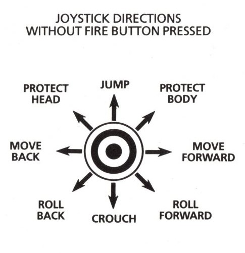
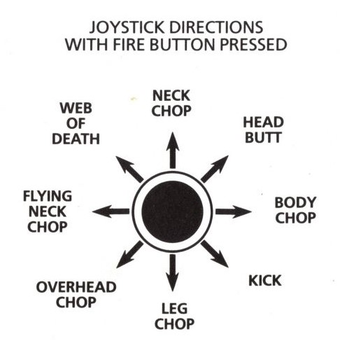

| Controls |
The game is in two parts which can be loaded in any order.
Side one: Combat practice (one player or two player). Perfect your swordsmanship against the finest warriors in the land.
Side two: Fight to the death. Fight for the princess against the evil minions of DRAX and finally face the evil one himself.
The following instructions are for a right-facing character. For a left-facing character the moves are reversed.


When the game has loaded press to choose from the following options: